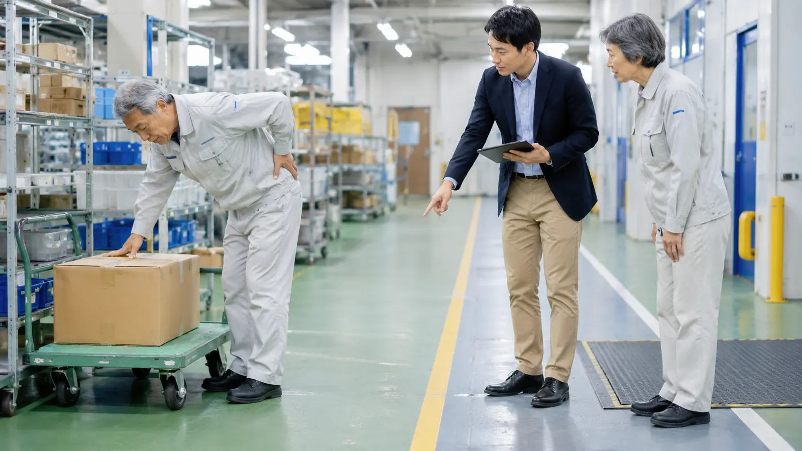

この記事の要点
- 最も多いのは転倒：厚生労働省の資料では、小売業・飲食店とも休業4日以上の労働災害で最も多い事故の型は転倒で、腰痛などの「動作の反動・無理な動作」も一定の割合を占めます。
- 重点は4つ：令和3年9月の協力依頼文書では、4S活動、危険の見える化、すべりにくい靴の着用、転倒予防体操を、従業員の参画のもとで進めるよう求めています。
- 腰痛は重さと高さを見直す：腰痛予防対策指針では、台車などの補助機器の利用、人力で扱う重量の目安、重量の明示、肘がおよそ90度になる作業台の高さなどが示されています。
- 教育は配置するときに：入れ替わりの多い職場では、勤務初日に売場や厨房で実物を見せながら短く伝え、朝礼などで繰り返すことが大切です。
この記事が役立つ方
- スーパー、ドラッグストア、ホームセンターなど小売店の店長・エリアマネージャー・本部の安全衛生担当者の方
- 飲食店やセントラルキッチンで、従業員の転倒ややけど、腰痛が気になっている経営者・店長の方
- 年末の繁忙期や冬に向けて、短期スタッフを含めた安全教育を見直したい方
小売業・飲食店では、どんな労働災害が起きていますか？
厚生労働省と中央労働災害防止協会は、労働災害が増加傾向にある小売業、社会福祉施設、飲食店を対象に「安全で安心な店舗・施設づくり推進運動」を進めています。店舗の転倒や腰痛は、本部と各店舗が役割を分けて取り組むことが求められる分野です。
厚生労働省の委託事業でまとめられた「小売業における労働災害防止のポイント」（平成24年3月）では、平成22年の小売業の休業4日以上の労働災害は約1万2千件で全産業の約1割を占め、そのうち転倒が約3割と最も多く、動作の反動（腰痛など）、交通事故、墜落・転落がそれぞれ約1割とされています。
業態別には、厚生労働省が令和3年9月に出した「食品スーパー及び総合スーパーにおける労働災害防止に向けたより一層の取組について（協力依頼）」の資料で、平成29年の労働者死傷病報告をもとにした集計が紹介されています。食品スーパーでは死傷者2,497人のうち転倒が1,052人、総合スーパーでは1,694人のうち転倒が631人、動作の反動・無理な動作が295人でした。転倒した方の約9割が女性で、骨折を伴い休業が長引く傾向があることも指摘されています。
飲食店については、厚生労働省の「飲食店における労働災害防止のために 好事例集」で、平成26年の休業4日以上の災害4,477件のうち、転倒が28.1%、切れ・こすれが23.9%、やけど（高温・低温のものとの接触）が16.7%、動作の反動・無理な動作（腰痛）が7.9%とされています。転倒の多くは、床が水や油でぬれて滑る、通路の荷物につまずくといった場面で起きています。
いずれも少し前の年の集計ですが、「転倒が最も多く、腰痛も一定数ある」という傾向をつかむには十分です。自社の状況を考えるときは、厚生労働省が毎年公表する最新の労働災害発生状況とあわせて、自社のヒヤリハットや休業の記録を見直してください。
売場・バックヤードの転倒は、どこを見直せばよいですか？
厚生労働省のリーフレット「小売業における労働災害防止のために～転倒、転落災害および荷による災害を防ぎましょう～」と飲食店の好事例集をもとに、場所ごとの見直し例をまとめると次のとおりです。
| 場所 | 起きやすいこと | 見直しの例 |
|---|---|---|
| 売場・出入口 | 床の水ぬれや氷で滑る、段差やマットのめくれでつまずく | 床の水たまりや氷はその都度取り除く、段差をなくすか目立つ表示をする、出入口に足ふきマットを置く |
| バックヤード・倉庫 | 通路に置いた段ボールや台車につまずく、積んだ荷が崩れる | 通路を確保して台車の通る範囲を白線で区切る、重い物は下に積む、台車は決めた場所に置く |
| 台車での運搬 | 前が見えずにぶつかる、曲がり角で人と接触する | 前が見えない高さまで積まない、台車は押して使う、曲がり角では一旦止まって確認する |
| 高い棚・脚立 | 踏台や脚立からの転落、棚の商品の落下 | 踏台・脚立は安定した場所で正しく使う、よく使う物は取りやすい高さに置く |
| 厨房 | 水や油で床が滑る、排水溝のふたで足をとられる | 作業前後の清掃、滑り止めのグレーチングやマット、厨房用と客席用で靴を分ける |
| 階段・通路 | 足もとが暗く踏み外す | 手すりと滑り止めを付ける、足もとが見える明るさを確保する |
北海道ではこれからの季節、来店客や従業員が持ち込む雪で出入口やバックヤードの床がぬれやすくなります。屋外の通路や駐車場を含めた冬の転倒対策は、北海道の冬の転倒災害を防ぐ記事も参考にしてください。
品出しや厨房作業の腰痛は、何を見直せばよいですか？
腰痛の対策は、厚生労働省の「職場における腰痛予防対策指針及び解説」が基本になります。小売業・飲食店でよくある作業に当てはめると、次のような点を確認します。
| 指針の主な内容 | 店舗・厨房での見直し例 |
|---|---|
| 重量物は台車や補助機器を使い、人力の負担を減らすことを原則とする | 飲料ケースや米袋はカゴ台車で売場まで運ぶ、寸胴鍋はキャスター付きの台で移動する |
| 人力で扱う重量は、満18歳以上の男性で体重のおおむね40%以下、女性はさらにその60%位までを目安とし、超える場合は2人以上で扱う | 重い商品は小分けにして運ぶ、1人で持たない物を決めて掲示する |
| 取り扱う物の重量をできるだけ明示する | 重い段ボールや食材の箱に重さを書く、置き場所に表示する |
| 前かがみ・中腰・ひねりを避け、物に体を近づけて扱う | 床置きの商品を減らし、低い棚の品出しは片膝をつくなど姿勢を変える |
| 作業台は肘がおよそ90度に曲がる高さにする | 流し台や作業台が低い場合は台で底上げする、配膳台車と客席テーブルの高さをそろえる |
| 立ち作業では、床が硬い場合にクッション性のある靴やマットを使い、片足置き台や小休止を取り入れる | レジや厨房にマットを敷く、足を交互に乗せる台を置く、1時間に1〜2回程度の小休止を取る |
飲食店の好事例集にも、流し台の底を約10cm上げる、麺ゆで装置の高さを90cmにする、配膳台車と客席テーブルの高さをそろえるといった、高さを合わせる工夫が紹介されています。作業の高さや重さは従業員の体格によっても合う・合わないが変わるため、実際に作業している人の意見を聞いて決めることが大切です。重い物を扱う作業の考え方は、製造業の立ち作業・重量物の腰痛予防の記事や運送・倉庫業の腰痛対策の記事でも詳しく紹介しています。
4S・見える化・靴・体操は、どう進めればよいですか？
令和3年9月の協力依頼文書では、①4S活動（整理・整頓・清掃・清潔）、②危険の見える化、③すべりにくい靴（耐滑性の高い防滑靴）の着用、④転倒予防体操の実施を重点として、従業員の参画のもとで取り組むよう求めています。あわせて、転倒や腰痛は作業の行動や身体機能の影響も大きく、設備の対策だけでは十分でない場合があるとして、健康づくりの取組や、教育・研修、業務ミーティングの場を活用することも挙げています。店舗で確認する項目の例は次のとおりです。
- 店長や責任者が定期的に売場とバックヤードを巡回し、通路の荷物や床のぬれを確認しているか
- 転びやすい場所や段差に、だれが見ても分かる表示（色テープ、注意の掲示など）をしているか
- 厨房や水を使う場所で、すべりにくい靴を着用するルールを決めているか
- 重い物の置き場所と運び方（台車を使う、2人で持つ、小分けにする）を決めて伝えているか
- 始業前や休憩後に、転倒・腰痛予防の体操を短時間でも行っているか
- パート・アルバイト・短期スタッフにも、勤務初日に危ない場所と作業のルールを伝えているか
- ヒヤリハットや「腰がつらい」という声を集め、対策の見直しに使っているか
腰痛予防対策指針では、重量物の取扱いなどの作業に配置する際とその後必要に応じて、腰痛の原因や予防の方法、腰痛予防体操などについて教育を行うこととされています。入れ替わりの多い職場では、長い座学よりも、実際の売場や厨房で「ここが滑りやすい」「この箱は台車で」と見せながら短く伝え、朝礼で繰り返す方法が続けやすいでしょう。高年齢の従業員が多い店舗では、高年齢従業員の転倒予防の記事で紹介した体力チェックもあわせて取り入れられます。
外部の専門家に依頼すると、何をしてもらえるか
プライズネス健康経営サポートでは、理学療法士が店舗や厨房を訪問し、品出し・調理・レジなどの作業姿勢や、床・通路・作業台の状態を確認して、転倒や腰痛につながりやすい場面と見直しの優先順位を提案します。従業員向けには、重い物の持ち方や転倒予防の体操を実技で学ぶセミナーを、朝礼や会議の時間に合わせて行うこともできます。内容はサービス内容、費用の目安は料金プランでご確認いただけます（例：単発セミナー55,000円〜、職場訪問評価132,000円〜、定期サポート月額88,000円〜）。なお、本サービスは医療行為ではなく予防のための支援で、特定の成果をお約束するものではありません。
店舗の転倒・腰痛対策を、一緒に見直しませんか
「転倒が続いているが、どこから手を付ければよいか分からない」「繁忙期の前に、短期スタッフも含めて安全の話をしてほしい」という段階からご相談いただけます。まずは職場の腰痛リスクを3分でセルフチェックし、その結果をもとに無料相談をご利用ください。
よくある質問
小売業や飲食店では、どんな労働災害が多いのですか？
厚生労働省の資料では、どちらも「転倒」が最も多い事故の型とされています。小売業向けの資料では、平成22年の休業4日以上の労働災害のうち転倒が約3割で、動作の反動（腰痛など）も約1割とされています。飲食店の好事例集では、平成26年の休業4日以上の災害のうち転倒が28.1%で、切れ・こすれ、やけど、動作の反動・無理な動作（腰痛）が続きます。最新の件数は、厚生労働省が毎年公表する労働災害発生状況でご確認ください。
転倒を防ぐために、まず何から始めればよいですか？
厚生労働省が食品スーパーなどに出した協力依頼文書（令和3年9月）では、4S活動（整理・整頓・清掃・清潔）、危険の見える化、すべりにくい靴の着用、転倒予防体操の4つを重点として、従業員の参画のもとで取り組むよう求めています。まずは店長や責任者が売場とバックヤードを一緒に歩き、床の水ぬれ、通路の荷物、段差など転びやすい場所を洗い出すことから始めるとよいでしょう。
品出しや厨房作業の腰痛予防では、何を確認すればよいですか？
厚生労働省の職場における腰痛予防対策指針では、重量物はできるだけ台車や補助機器を使い、人力で扱う場合は満18歳以上の男性で体重のおおむね40%以下、女性はさらにその60%位までを目安とすること、取り扱う物の重量をできるだけ明示すること、作業台は肘がおよそ90度に曲がる高さにすることなどが示されています。飲料ケースや米袋の品出し、寸胴鍋の移動、低い流し台での作業などを、この視点で見直します。
パートや短期のスタッフが多い職場では、どう伝えればよいですか？
腰痛予防対策指針では、重量物の取扱いなどの作業に配置する際に、腰痛の原因や予防の方法、腰痛予防体操などの教育を行うこととされています。協力依頼文書でも、設備の対策だけでは十分でない場合があるとして、教育や研修、業務ミーティングの場を活用するよう求めています。勤務初日に、転びやすい場所、台車の使い方、重い物の持ち方を実際の売場や厨房で見せながら短く伝え、朝礼で繰り返す方法が現実的です。
プライズネスに依頼すると、何をしてもらえますか？
理学療法士が店舗や厨房を訪問し、品出しや調理、レジなどの作業姿勢、床や通路の状態を確認して、転倒や腰痛につながりやすい場面と見直しの優先順位を提案します。従業員向けに、重い物の持ち方や転倒予防の体操を実技で学ぶセミナーも行います。費用の目安は単発セミナー55,000円〜、職場訪問評価132,000円〜、定期サポート月額88,000円〜です。医療行為ではない予防のための支援で、特定の成果をお約束するものではありません。痛みやしびれがある方には医療機関への相談をおすすめしています。
関連する記事
この記事は、公的機関などの公開資料をもとにAIを活用して作成しています。制度や数値は変わることがあるため、ご判断の際は出典の最新情報をご確認ください。医療上の判断が必要な症状については医療機関にご相談ください。
出典・参考：
厚生労働省 職場のあんぜんサイト「安全で安心な店舗・施設づくり推進運動」
厚生労働省「食品スーパー及び総合スーパーにおける労働災害防止に向けたより一層の取組について（協力依頼）」（令和3年9月29日）
厚生労働省「小売業における労働災害防止のために～転倒、転落災害および荷による災害を防ぎましょう～」
厚生労働省委託事業「小売業における労働災害防止のポイント～安全で安心な職場をつくるために～」（平成24年3月）
厚生労働省「飲食店における労働災害防止対策について」
厚生労働省ほか「飲食店における労働災害防止のために 好事例集」（平成28年3月）
厚生労働省「職場における腰痛予防対策指針及び解説」（愛知労働局掲載）
（いずれも2026年11月13日確認）